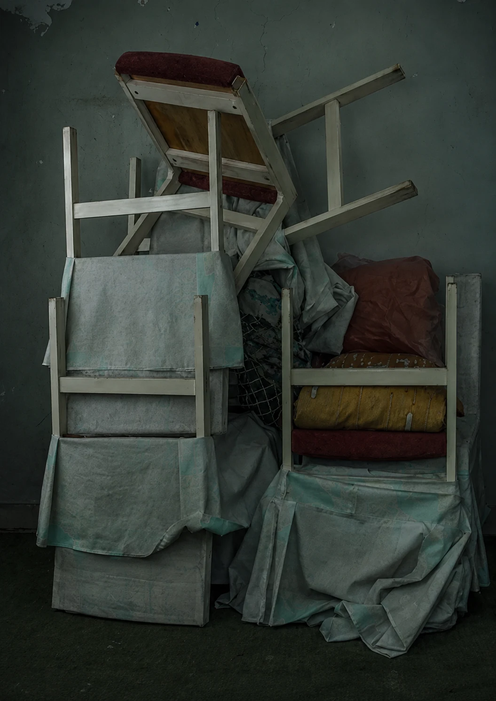

Photography / Long exposure / 2014-present
EMPTY SPACE
A photographic series about absence, darkness, and the slow discovery of spaces left outside daily life.

Series statement
EMPTY SPACE is a photographic series about absence. The project began in 2014, when my work became more deeply invested in the concept of time in photography.
The series was created through long exposure photography, using a single moving light source to slowly illuminate dark and unused spaces. I chose interiors that are usually forgotten, ignored, or left outside daily life: rooms that exist quietly, without attention.
During the long exposure, light becomes an active presence inside the image. It moves through the space, touching objects, revealing surfaces, and creating a dramatic tension between darkness and visibility. The room is not simply photographed; it is slowly discovered over time.
In EMPTY SPACE, the absence of people becomes central. The abandoned objects, empty interiors, and traces of use suggest a human presence that has disappeared. Through darkness, movement, and time, the series transforms ordinary neglected spaces into quiet psychological landscapes.